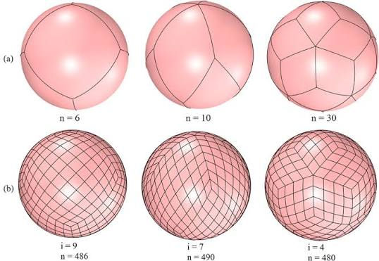

An Elementary Family of Dihedral Spherical Tilings with Rhombi
Investigation of finite edge-to-edge tilings of the sphere by two spherical rhombi prototiles. Uses coordinates on the unit sphere to prove that the proposed edges form a genuine quadrangulation and to calculate the tile angles and vertex types. It shows that the construction is dihedral for all cases except n=4.